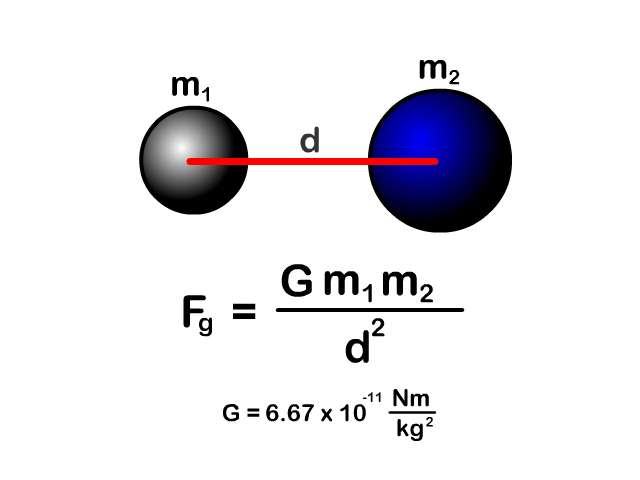
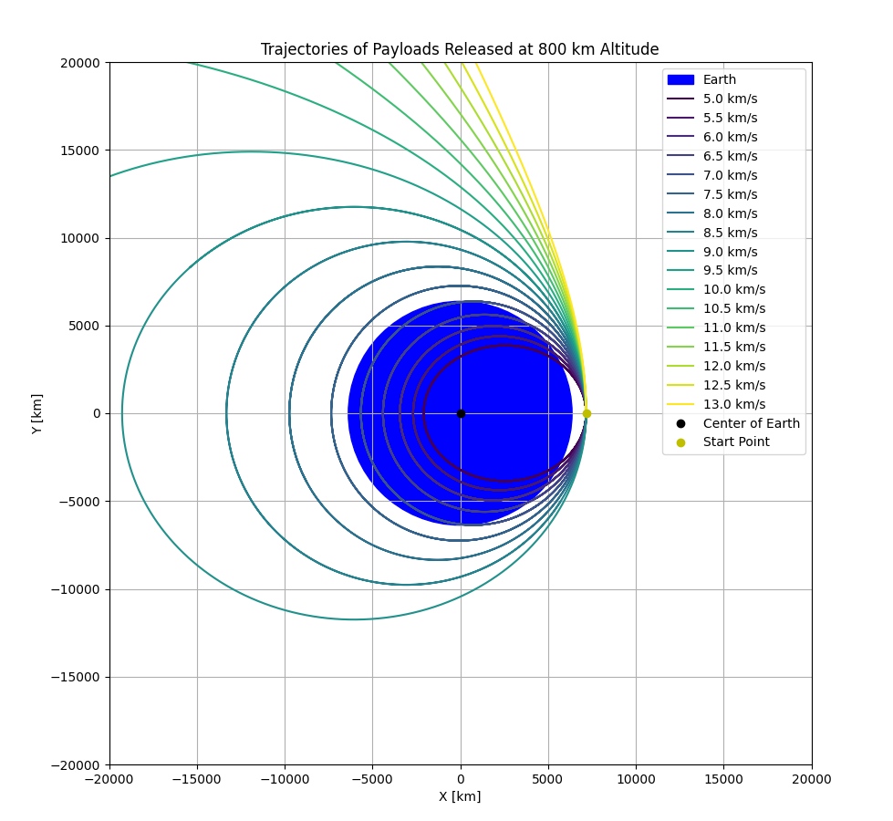

3️
Trajectories of a Freely Released Payload Near Earth
1. Objective
Analyze and simulate the trajectories of a payload released from a certain height (800 km above Earth's surface) with various initial horizontal velocities. Determine whether the resulting path is elliptical, parabolic, or hyperbolic, and relate these outcomes to space mission concepts like orbital insertion, reentry, or escape velocity.
2. Physical Background
We analyze the motion under Newton’s Law of Universal Gravitation:
\[
\vec{F}_g = -\frac{G M m}{r^2} \hat{r}
\]
Where:
- \(G = 6.674 \times 10^{-11} \ \text{m}^3 \text{kg}^{-1} \text{s}^{-2}\)
- \(M\) is Earth's mass (\(5.972 \times 10^{24} \ \text{kg}\))
- \(r\) is the distance from Earth's center
- The motion is governed by Newton’s Second Law: \(\vec{F} = m \vec{a}\) 
3. Initial Conditions
- Altitude: 800 km above Earth's surface
- Earth Radius: 6371 km → Initial radial distance: \(R_0 = 7171 \ \text{km} = 7.171 \times 10^6 \ \text{m}\)
- Initial Velocities: from 5 km/s to 13 km/s in steps of 0.5 km/s
- Initial Position: on the right side of Earth (positive x-axis)
- Initial Velocity Direction: purely tangential (positive y-direction)
4. Python Simulation Code
import numpy as np
import matplotlib.pyplot as plt
from scipy.integrate import solve_ivp
G = 6.67430e-11
M = 5.972e24
R_earth = 6371e3
altitude = 800e3
r0 = R_earth + altitude
t_span = (0, 20000)
t_eval = np.linspace(t_span[0], t_span[1], 10000)
def gravity(t, y):
x, vx, y_, vy = y
r = np.sqrt(x**2 + y_**2)
ax = -G * M * x / r**3
ay = -G * M * y_ / r**3
return [vx, ax, vy, ay]
velocities_kms = np.arange(5, 13.5, 0.5)
colors = plt.cm.viridis(np.linspace(0, 1, len(velocities_kms)))
fig, ax = plt.subplots(figsize=(10, 10))
ax.add_patch(plt.Circle((0, 0), R_earth / 1e3, color='blue', label='Earth'))
for i, v_kms in enumerate(velocities_kms):
vx0 = 0
vy0 = v_kms * 1000
y0 = [r0, vx0, 0, vy0]
sol = solve_ivp(gravity, t_span, y0, t_eval=t_eval, rtol=1e-8)
x = sol.y[0]
y = sol.y[2]
ax.plot(x / 1e3, y / 1e3, label=f'{v_kms:.1f} km/s', color=colors[i])
ax.plot(0, 0, 'ko', label='Center of Earth')
ax.plot(r0 / 1e3, 0, 'yo', label='Start Point')
ax.set_aspect('equal')
ax.set_xlim(-20000, 20000)
ax.set_ylim(-20000, 20000)
ax.set_xlabel('X [km]')
ax.set_ylabel('Y [km]')
ax.set_title('Trajectories of Payloads Released at 800 km Altitude')
ax.legend(loc='upper right')
plt.grid(True)
plt.show()
5. Observations & Analysis
- Velocities < 7.8 km/s: Suborbital trajectories → reentry.
- Around 7.8 km/s: Circular or low Earth orbits (LEO).
- Between 8–11.2 km/s: Elliptical or escape trajectories.
- > 11.2 km/s: Hyperbolic escape — the payload leaves Earth's gravitational field. 
6. Real-World Applications
- Orbital insertion: Matching the orbital speed for satellite deployment.
- Escape missions: Reaching speeds above 11.2 km/s for moon or Mars missions.
- Controlled reentry: Lower speeds for deorbiting and returning safely.
7. Conclusion
This simulation provides insights into how varying horizontal velocities affect the type of trajectory a payload follows. By understanding these outcomes, one can effectively plan orbital maneuvers, insertions, and escapes in real space missions.